CS184/284A Fall 2026 Homework 2 Write-Up
Link to webpage: cal-cs184-student.github.io/hw2-np-writeup
Link to GitHub repository: github.com/cal-cs184-student/hw2-np
Overview
In this homework I built the core of a small geometry processing tool. In Section I, I used de Casteljau's algorithm to evaluate Bezier curves in 2D, then extended it to Bezier surfaces by applying the same 1D algorithm along both parameter directions. In Section II, I worked with triangle meshes stored in a half-edge data structure. I computed area-weighted vertex normals for smooth Phong shading, implemented the two local remeshing operations (edge flip and edge split), and combined them into Loop subdivision, which upsamples a coarse mesh into a smoother, higher-resolution one.
The most interesting takeaway for me was how much the half-edge structure makes possible with only local pointer changes. Flips and splits each touch a constant number of elements, yet chaining them across the whole mesh produces a global result like Loop subdivision. It also showed me how unforgiving that structure is: a single wrong pointer or uninitialized flag doesn't crash right away. Instead it quietly corrupts the mesh, so careful bookkeeping and visual checks were essential.
Section I: Bezier Curves and Surfaces
Part 1: Bezier curves with 1D de Casteljau subdivision
De Casteljau's algorithm evaluates a Bezier curve at a parameter \(t \in [0, 1]\) by repeated linear interpolation. Given \(n\) control points \(p_1, \dots, p_n\), one step produces \(n - 1\) new points: \[ p_i' = \text{lerp}(p_i, p_{i+1}, t) = (1 - t)\,p_i + t\,p_{i+1}. \] Applying the step again to these intermediate points gives \(n - 2\) points, and so on, until a single point remains. That final point lies exactly on the Bezier curve at \(t\).
I implemented one level of this recursion in BezierCurve::evaluateStep. It loops over each consecutive pair of
input points, computes \((1 - t)\,p_i + t\,p_{i+1}\) using the curve's member t, and pushes the result into a new
vector. The result is one point shorter than the input. The GUI calls this function repeatedly (each press of E),
so stepping through shows every level of the algorithm until only the evaluated point is left.
I made my own curve with 6 control points (bzc/curve6.bzc). Each press of E below runs one more step,
going from 6 points down to the single evaluated point.

|

|

|

|

|

|


Part 2: Bezier surfaces with separable 1D de Casteljau
A Bezier surface is defined by an \(n \times n\) grid of control points \(P_{ij}\) and two parameters \(u, v\). The evaluation is separable. First, treat each row \(P_{i0}, \dots, P_{i(n-1)}\) as the control points of a 1D Bezier curve and evaluate it at \(u\), which gives one point \(P_i\) per row. These \(n\) points form a new Bezier curve running roughly across the rows. Evaluating that curve at \(v\) gives the final point \(P(u, v)\) on the surface.
I implemented this with three functions:
BezierPatch::evaluateStepis the same single lerp step as Part 1, but for 3D points and with \(t\) passed in as an argument.BezierPatch::evaluate1Drepeatedly callsevaluateStepuntil only one point is left, and returns it.BezierPatch::evaluatecallsevaluate1Don each row ofcontrolPointswith \(u\), collects the results, then callsevaluate1Donce more on that list with \(v\).
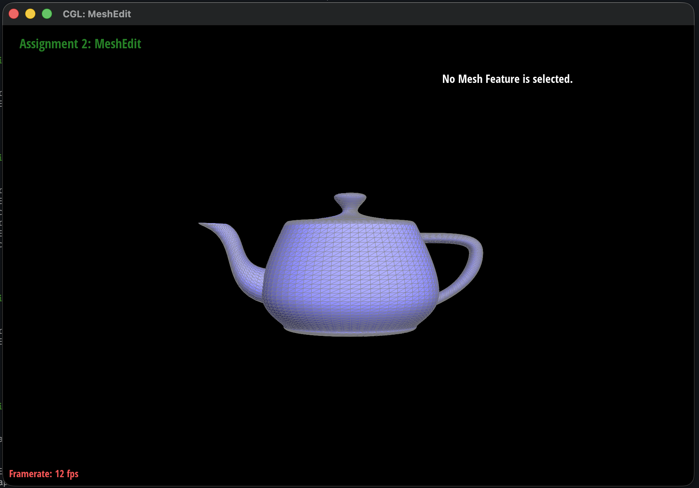
bez/teapot.bez evaluated with my separable de Casteljau implementation.Section II: Triangle Meshes and Half-Edge Data Structure
Part 3: Area-weighted vertex normals
To compute the normal at a vertex, I walk around all faces incident to it using the half-edge structure. Starting from the
vertex's half-edge h, I move to the next outgoing half-edge with h = h->twin()->next() until
I return to the start. For each non-boundary face, I take its three vertex positions \(p_0, p_1, p_2\) and compute
\[ (p_1 - p_0) \times (p_2 - p_0). \]
This cross product is perpendicular to the triangle, and its length is twice the triangle's area. That means summing the raw
cross products already weights each face normal by its area, with no separate area calculation. Finally, I normalize the
sum to get a unit vertex normal. Because the half-edges circulate counter-clockwise around each face, the normal points
outward. I used HalfedgeCIter throughout because Vertex::normal() is a const member function.
|
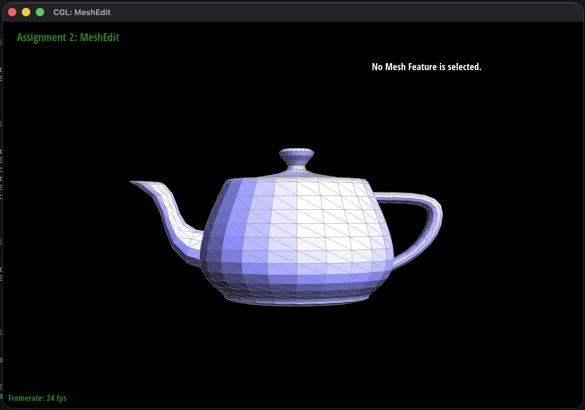 |
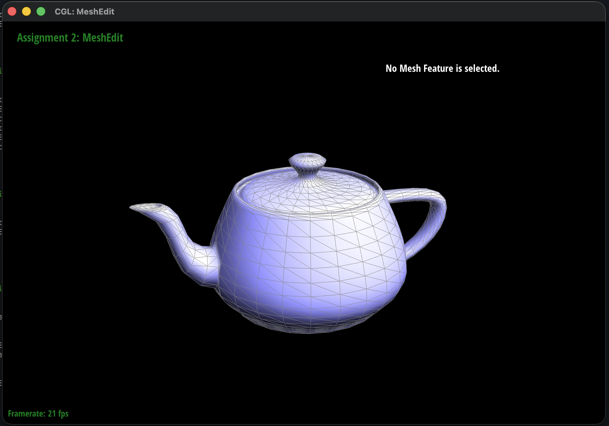 |
Part 4: Edge flip
An edge flip takes two triangles \((a, b, c)\) and \((c, b, d)\) that share edge \((b, c)\) and turns them into \((a, d, c)\) and \((a, b, d)\), so the shared edge now connects \(a\) and \(d\). No elements are created or deleted; only pointers change.
Following the recommended approach, I drew the two triangles before and after the flip, labeled every element, and
collected iterators to all of them up front: the six half-edges \(h_0\)–\(h_5\) of the two faces, the four vertices
\(a, b, c, d\), the five edges, and the two faces. I then reassigned every pointer, not just the ones that change.
For each half-edge I called setNeighbors(next, twin, vertex, edge, face), and I reset the halfedge()
of every vertex, edge and face involved. Writing everything explicitly made the code match the diagram line by line, which
made it easy to check. The flip does a constant amount of work and returns the same edge, which now runs between \(a\) and
\(d\).
The main trap is that the vertices \(b\) and \(c\) lose an incident edge, so their halfedge() pointers may no
longer point at a half-edge that starts at them. Reassigning each vertex's half-edge to one that I know still originates at
that vertex after the flip avoids this.

|
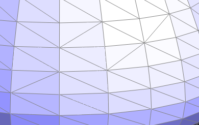 |
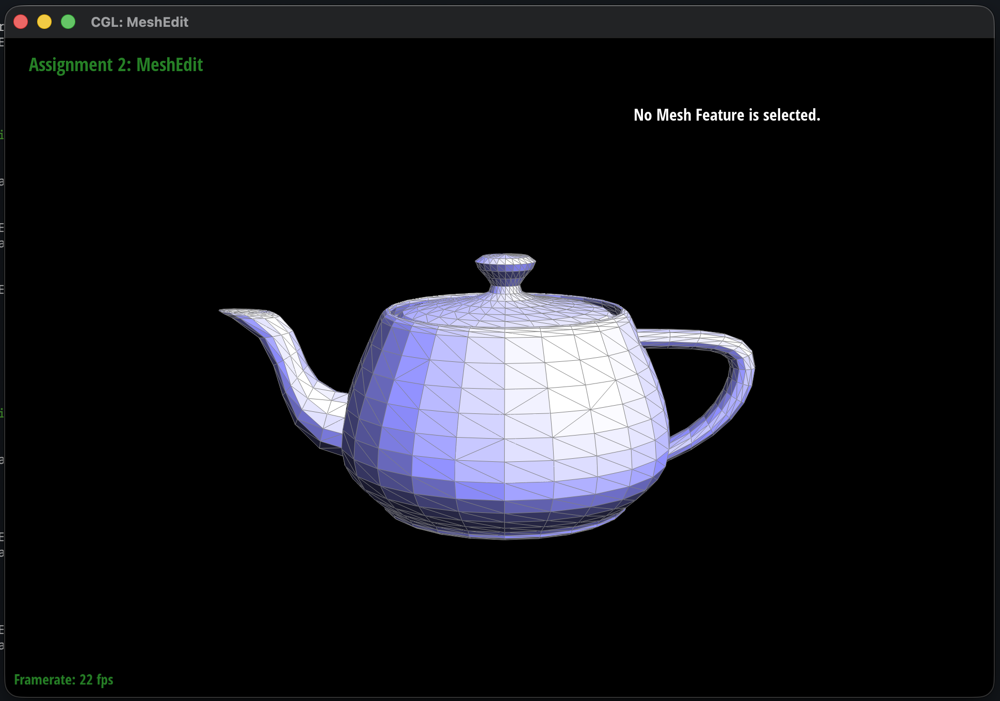
Part 5: Edge split
An edge split inserts a new vertex \(m\) at the midpoint of edge \((b, c)\) and connects it to the two opposite vertices \(a\) and \(d\), turning two triangles into four. It creates 1 vertex, 3 edges, 6 half-edges and 2 faces. If either side of the edge is a boundary face, my implementation returns without changing anything.
I used the same "draw it, name everything, set every pointer" approach as for the flip. I reused the original edge
\(e_0\) for the half from \(b\) to \(m\), and the original faces \(f_0, f_1\) for two of the four new triangles. I then
created the new edges \((a, m)\), \((m, c)\), \((m, d)\), the new faces \(f_2, f_3\), and the six new half-edges. I named the new
half-edges after their endpoints (e.g. h_am, h_ma), which made it much easier to see which half-edges
are twins and which face each one belongs to. Every half-edge in the four resulting triangles gets a full
setNeighbors call, and every vertex, edge and face gets its halfedge() set. The new vertex is placed at
\((b + c)/2\), and its half-edge points along the original split edge, as the starter code requests.
Inside splitEdge I also set the isNew flag on each edge. The two halves of the original edge
(\(e_0\) and \((m, c)\)) are marked as not new, and the two edges that cut across the old faces (\((a, m)\) and \((m, d)\)) are
marked as new. That flag isn't used by the split itself, but Loop subdivision depends on it (see Part 6).

|
|
|
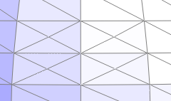 |
|
|
|

|
Part 6: Loop subdivision for mesh upsampling
I implemented Loop subdivision in MeshResampler::upsample using the recommended order: compute all new positions
on the coarse mesh first, then change the connectivity, then move the vertices.
- Old vertex positions. For each original vertex, I mark
isNew = false, sum the positions of its \(n\) neighbors by circulating its half-edges, and store \[ \text{newPosition} = (1 - n u)\,\text{position} + u \cdot \text{neighbor\_sum}, \qquad u = \begin{cases} 3/16 & n = 3 \\ 3/(8n) & \text{otherwise.} \end{cases} \] - New (edge) vertex positions. For each original edge \((A, B)\) with opposite vertices \(C\) and \(D\), I store
\( \frac{3}{8}(A + B) + \frac{1}{8}(C + D) \) in
Edge::newPosition, mark the edge as not new, and save it in a list. - Split. I split every edge in that saved list, so edges created during splitting are never split again. Each
returned midpoint vertex is marked
isNew = trueand given the position stored on its edge. - Flip. I flip every edge that is new and connects an old vertex to a new vertex. This turns each original triangle into the standard 4-1 subdivision.
- Update. Finally I copy
newPositionintopositionfor every vertex.
Computing all positions before touching the connectivity matters because the weights must use the original neighbors and positions. If I moved vertices as I went, later averages would mix in already-updated positions.
Debugging journey
My first version produced lumpy, irregular blobs instead of a smooth shape (below). After one subdivision the cube should
show a regular, symmetric pattern of triangles, but mine was visibly scrambled. The cause was that splitEdge
created new edges without ever setting their isNew flag. In C++ that bool was left uninitialized, so it
held whatever value happened to be in memory. Step 4 therefore sometimes flipped edges that were halves of an original edge,
which wrecked the 4-1 subdivision pattern. Every later round inherited and amplified the damage. Explicitly setting
isNew on all four edges in splitEdge fixed it.
|
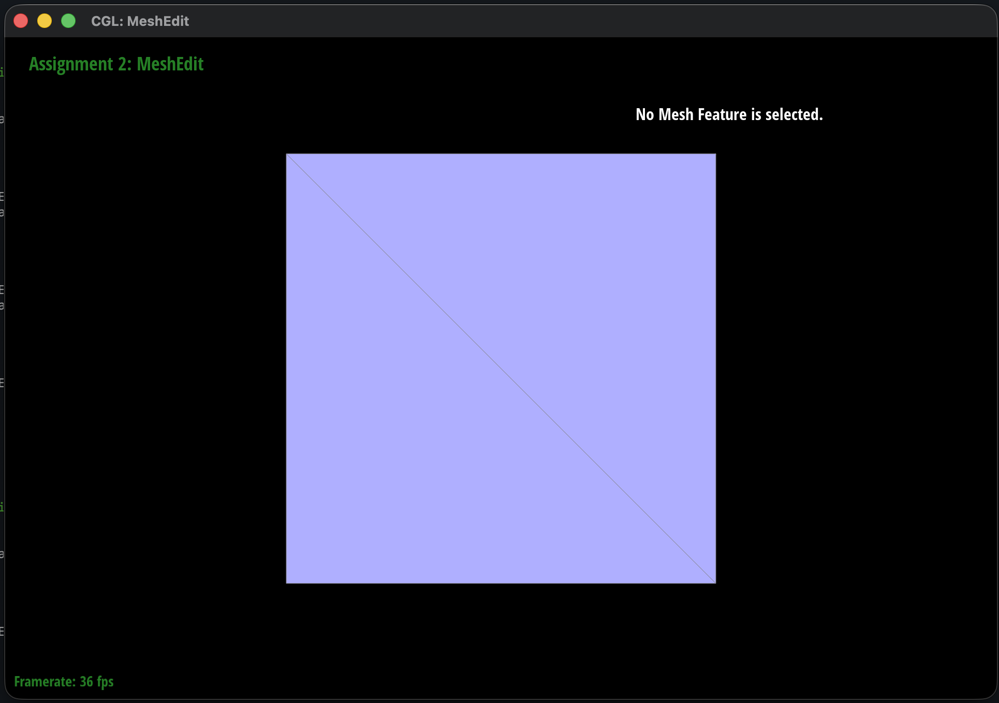 |
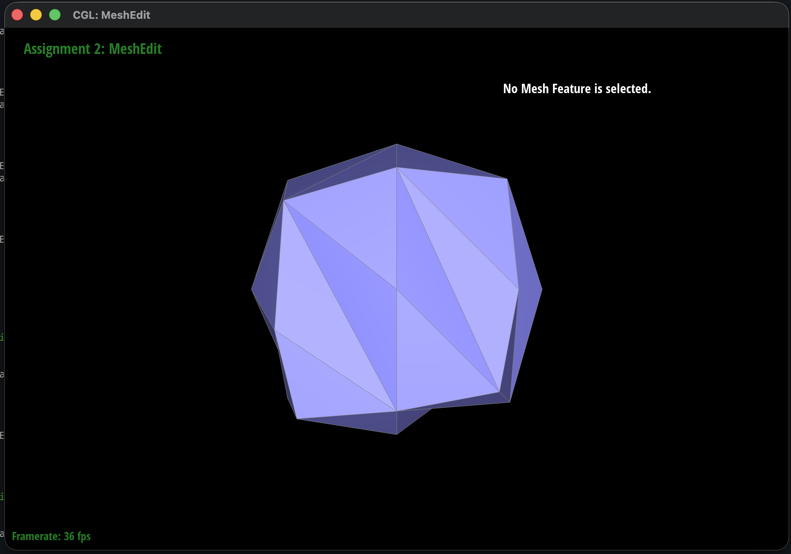 |
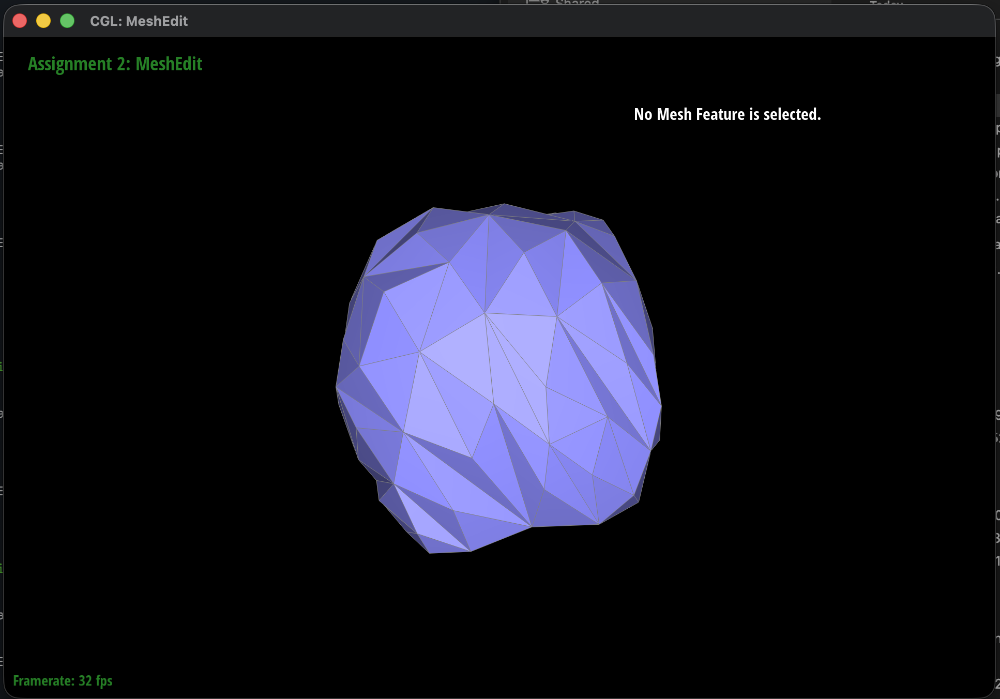 |
|
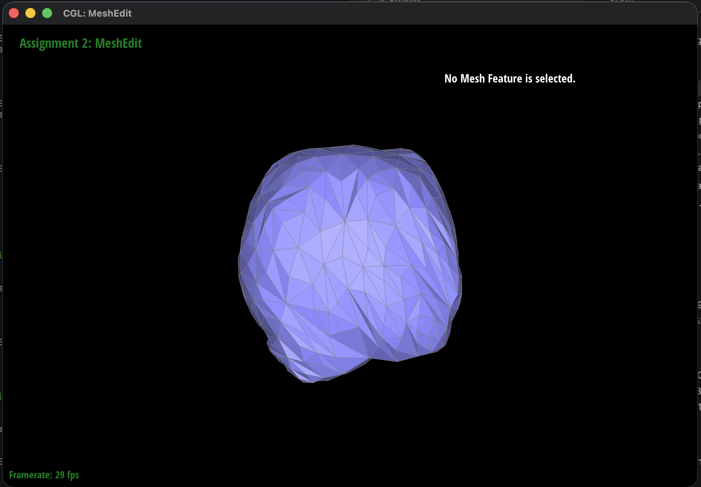 |
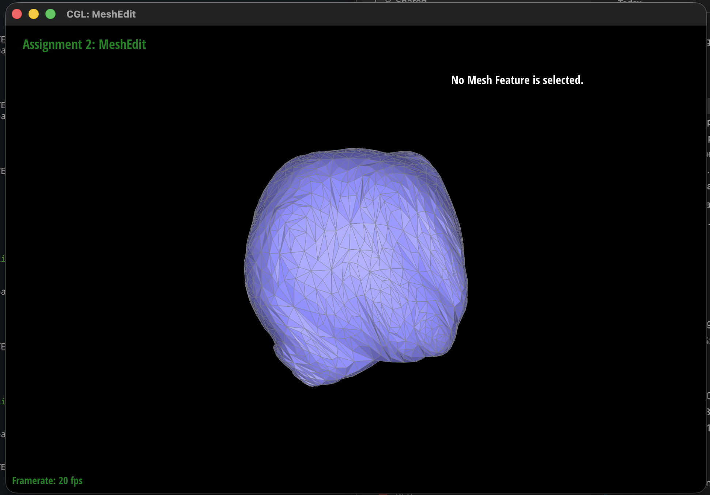 |
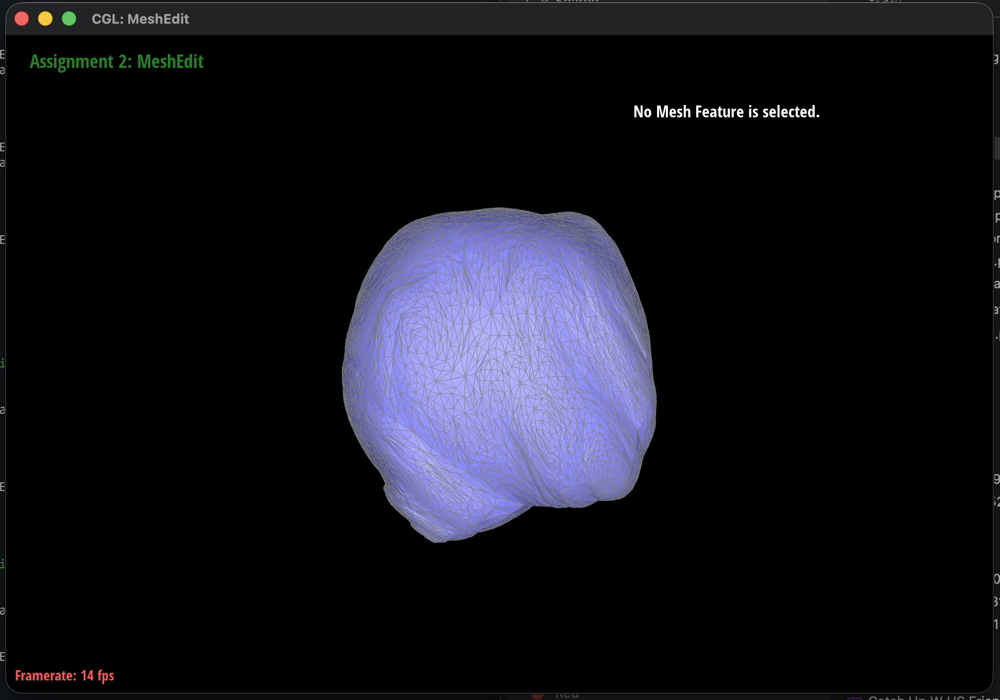 |
Sharp corners and edges
Loop subdivision is an approximating scheme: every old vertex is pulled toward the average of its neighbors. As a result, sharp corners and creases get rounded off and the whole mesh shrinks slightly with each iteration. The cube is the extreme case. Its corners are far from the plane of their neighbors, so after a few rounds it looks more like a rounded blob than a cube.
Pre-splitting edges near a sharp feature reduces this effect. Splitting adds vertices close to the corner or crease, so the corner's neighbors are already nearby. The averaging then pulls it a much shorter distance, and the feature stays sharper after subdivision.
To test this, I loaded the cube and repeatedly split edges around one corner (the highlighted vertex at \((1, 1, 1)\)), packing many thin triangles near it and along its edges. I then subdivided several times. Compare the result to the unmodified cube in the "Cube asymmetry" section below, which rounds off evenly into a blob.

|

|
The pre-split region kept a pronounced point and a sharp ridge, while the parts of the cube I didn't touch rounded off as usual. The trade-off is that the splits were dense and uneven, so the surface near them came out wavy instead of cleanly creased. Pre-splitting does preserve sharpness, but the splits need to be placed evenly to get a clean result.
Cube asymmetry
Subdividing dae/cube.dae repeatedly gives a smooth but slightly lopsided shape:

|

|

|

|

|

|
The asymmetry comes from the triangulation, not the geometry. Each square face of the cube is split into two triangles along a single diagonal, and the diagonals don't run the same way relative to every corner. Some corners touch several diagonals and others touch none, so the corners end up with different degrees. Since Loop's weights depend on the vertex degree and its neighbors, corners with more neighbors are pulled differently from corners with fewer. Each face is also biased toward its diagonal. Those differences compound with every iteration.
To fix this, I pre-process the cube by splitting the diagonal edge of every face (6 splits total). Each split puts a vertex at the center of the face and connects it to all four corners, so every face becomes four identical triangles around its center. Every corner then has the same neighborhood: its 3 cube edges plus the 3 adjacent face centers, for a degree of 6. Every face center has degree 4. With all corners and all faces treated identically, the subdivision respects the cube's symmetry and converges to a symmetric rounded shape.

|

|